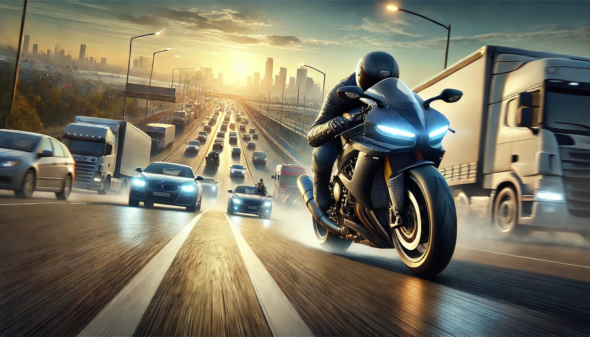

If you’re a fan of high-speed bike racing games, then Traffic Rider is a title that deserves a permanent spot on your device. This game is not just another racing game; it’s a thrilling experience that combines stunning visuals, heart-pounding action, and a ton of premium features that make it stand out in the crowded world of mobile gaming. Whether you’re a casual gamer or a hardcore racing enthusiast, Traffic Rider has something for everyone. Let’s dive into the premium features that make this game an absolute must-play.
If you thought Traffic Rider couldn’t get any better, think again! The Traffic Rider MOD APK takes the game to a whole new level by giving you access to premium features like unlimited money, all bikes unlocked, and ad-free gameplay right from the start. Imagine cruising down the highway on your dream bike, fully upgraded and customized, without worrying about grinding for in-game currency or dealing with annoying ads. This modded version lets you focus on what really matters—enjoying the thrill of high-speed racing and exploring every corner of the game’s immersive world. Whether you’re a casual player or a racing enthusiast, the Traffic Rider MOD APK is your ticket to endless excitement and unparalleled freedom. Buckle up, because this is racing redefined!
One of the first things you’ll notice about Traffic Rider is its jaw-dropping graphics. The developers have gone above and beyond to create a visually stunning game that feels like you’re riding through real-life environments. From the sunlit highways to the rain-soaked streets, every detail is meticulously crafted to provide an immersive experience.
The bikes themselves are a work of art. Each model is designed with precision, from the sleek curves to the shiny metallic finishes. The lighting effects, reflections, and shadows add a layer of realism that makes you feel like you’re actually on the road. And let’s not forget the traffic! The cars, trucks, and buses look so real that you might find yourself swerving to avoid them even when you’re not playing.
Let’s face it: grinding for in-game currency can be a drag. But with Traffic Rider’s premium feature of unlimited money, you can kiss those days goodbye. Imagine having the freedom to buy any bike, upgrade it to the max, and customize it to your heart’s content without worrying about running out of cash.
Unlimited money means you can focus on what really matters—racing! No more waiting to unlock the best bikes or saving up for that turbo upgrade. You can dive straight into the action and enjoy the game to its fullest. It’s like having a cheat code that makes everything more fun without ruining the challenge.
What’s a racing game without an impressive lineup of bikes? Traffic Rider boasts a wide variety of motorcycles, from sleek sports bikes to powerful cruisers. And the best part? With the premium feature of all bikes unlocked, you don’t have to spend hours unlocking them one by one.
Want to ride a futuristic electric bike? Go for it. Prefer the raw power of a classic superbike? It’s yours. Each bike has its own unique handling, speed, and style, so you can switch things up whenever you feel like it. Whether you’re a speed demon or a laid-back cruiser, there’s a bike in Traffic Rider that’s perfect for you.
One of the standout features of Traffic Rider is its endless mode. Unlike traditional racing games where you have a set number of levels or tracks, endless mode lets you ride as far as you can without any limits. The traffic patterns change dynamically, so no two rides are ever the same.
This mode is perfect for those who love a good challenge. How long can you last before crashing? Can you beat your high score? The adrenaline rush of weaving through traffic at top speed is unmatched. Plus, with the premium features like unlimited money and all bikes unlocked, you can experiment with different strategies to see how far you can go.
If endless mode isn’t your thing, don’t worry—Traffic Rider also offers a full career mode that takes you on a journey from rookie rider to racing legend. With over 100 missions to complete, there’s never a dull moment. Each mission comes with its own set of challenges, from overtaking a certain number of vehicles to completing a race within a time limit.
The career mode is designed to keep you engaged and motivated. As you progress, you’ll unlock new bikes, upgrades, and even special abilities that give you an edge on the road. It’s a rewarding experience that makes you feel like you’re actually building a career as a professional racer.
Graphics aren’t the only thing that makes Traffic Rider feel real—the sound design is equally impressive. The roar of the engine, the screech of tires, and the honking of horns all contribute to an immersive audio experience.
Each bike has its own distinct engine sound, so you can tell whether you’re riding a high-performance sports bike or a rugged cruiser just by listening. The sound effects add an extra layer of excitement to the game, making every ride feel like a cinematic experience.
Not everyone plays games the same way, and Traffic Rider understands that. The game offers fully customizable controls, so you can set it up however you like. Whether you prefer tilt controls, touch controls, or a combination of both, you can tailor the game to suit your playstyle.
This level of customization ensures that the game is accessible to players of all skill levels. Beginners can start with simpler controls and gradually switch to more advanced setups as they get better. It’s a small feature that makes a big difference.
The developers of Traffic Rider are constantly working to improve the game and add new content. From new bikes and tracks to special events and challenges, there’s always something to look forward to. These updates keep the game fresh and exciting, so you’ll never run out of things to do.
And the best part? Many of these updates are free, so you don’t have to worry about spending extra money to enjoy the latest features. It’s clear that the developers are passionate about their game and want to provide the best possible experience for their players.
Let’s be honest—ads can ruin the fun of any game. But with Traffic Rider’s premium features, you can say goodbye to those pesky interruptions. No more waiting 30 seconds to continue your ride or being forced to watch ads to earn rewards.
The game is designed to provide a seamless and enjoyable experience from start to finish. You can focus on what really matters—racing your heart out and having a blast.
In today’s fast-paced world, not everyone has hours to spend on gaming. Traffic Rider is perfect for quick gaming sessions, whether you’re waiting for a bus or taking a break at work. The missions are short and sweet, so you can make progress even if you only have a few minutes to spare.
At the same time, the game is deep enough to keep you hooked for hours if you want to dive in. It’s the perfect balance of accessibility and depth, making it a great choice for both casual and hardcore gamers.
While Traffic Rider is a serious racing game at its core, it doesn’t take itself too seriously. The game is filled with little touches of humor that add to its charm. From the quirky names of the bikes to the hilarious reactions of the drivers you overtake, there’s always something to make you smile.
This lighthearted approach makes the game feel more like a fun escape than a stressful competition. After all, isn’t that what gaming is all about?
Whether you’re a teenager looking for some fast-paced action or an adult who wants to relive the thrill of riding a bike, Traffic Rider is a game that appeals to all ages. The controls are easy to learn, the graphics are universally appealing, and the gameplay is engaging without being overly complicated.
It’s a game that you can enjoy on your own or share with friends and family. Who knows? You might even start a friendly competition to see who can get the highest score!
In a world full of racing games, Traffic Rider stands out as a true gem. With its immersive graphics, unlimited money, all bikes unlocked, endless excitement, and full career mode, it offers a premium gaming experience that’s hard to beat. The game is packed with features that cater to all types of players, from casual gamers to hardcore racing fans.
So, what are you waiting for? Download Traffic Rider today and get ready for the ride of your life. Whether you’re speeding down the highway, weaving through traffic, or completing missions in career mode, one thing’s for sure—you’re in for an unforgettable experience. Happy riding!